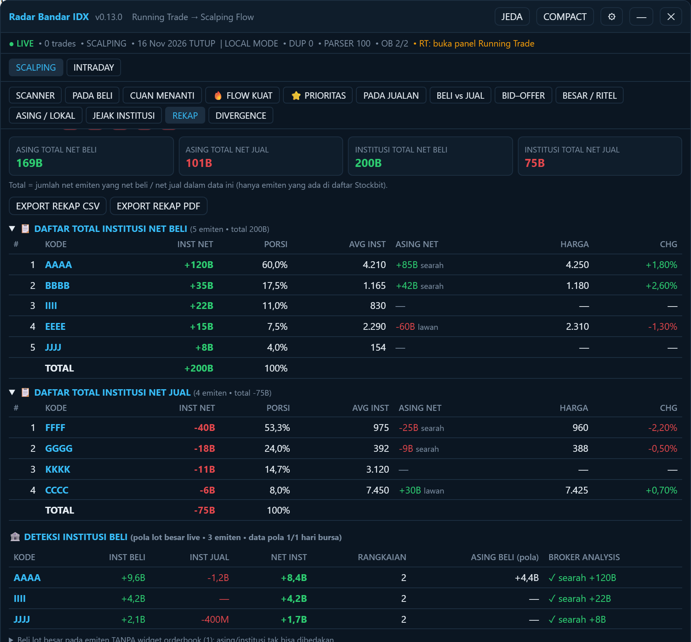

Baca jejak institusi & asing langsung dari layar Stockbit Anda
Ekstensi Chrome yang merangkum lot besar, aliran asing, dan net beli institusi dari halaman Stockbit yang Anda buka sendiri. Rekap penutupan, rentang tanggal, PDF, dan publikasi REKAP harian ke halaman ini.

Fitur
Semua dihitung dari apa yang tampil di layar Stockbit Anda.
Daftar total institusi
Semua emiten net beli dan net jual institusi dalam satu peringkat: nilai, porsi dari total, hari beli, dan arah asing.
Deteksi institusi beli
Pola lot besar beruntun saat jam bursa, dipisahkan ASING atau INSTITUSI/LOKAL, lalu dicocokkan dengan Broker Analysis.
REKAP penutupan & rentang
Asing dan institusi hari ini, 5 hari terakhir, atau rentang tanggal bebas. Export PDF dan CSV.
AUTO REKAP
Data asing (Movers) dan institusi (Broker Analysis) diambil otomatis setelah 16:20 WIB tiap hari bursa.
REKAP harian online
Ringkasan REKAP dikirim terenkripsi ke halaman ini setiap selesai penutupan (opsional).
Divergence RSI 14
Hidden bullish, bullish, hidden bearish, dan bearish divergence dari tabel Chartbit.
Prinsip
Dibuat agar data dan akun Anda tetap di tangan Anda.
Cara pasang
Belum ada di Chrome Web Store, jadi dipasang sebagai ekstensi "unpacked".
- Unduh dan ekstrak {{ZIP}}. Hasilnya folder
radar-bandar-idx. - Buka
chrome://extensions, nyalakan Developer mode di kanan atas. - Klik Load unpacked, pilih folder
radar-bandar-idx. - Login Stockbit sendiri, buka
stockbit.com/orderbook. Panel radar muncul di kanan. - Update: unduh versi baru, timpa isi folder, lalu klik ↻ di kartu ekstensi dan refresh tab Stockbit. Riwayat REKAP tetap tersimpan.
Catatan perubahan
Versi terbaru di atas.
{{CHANGELOG}}Status build
Halaman dibangun ulang otomatis setiap hari (06:00 WIB), setiap ada REKAP baru, dan setiap ada perubahan kode.